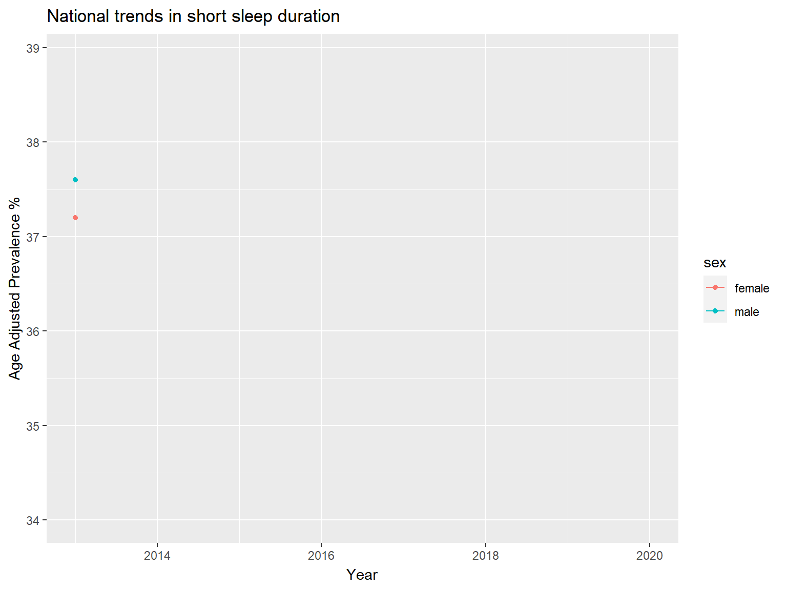
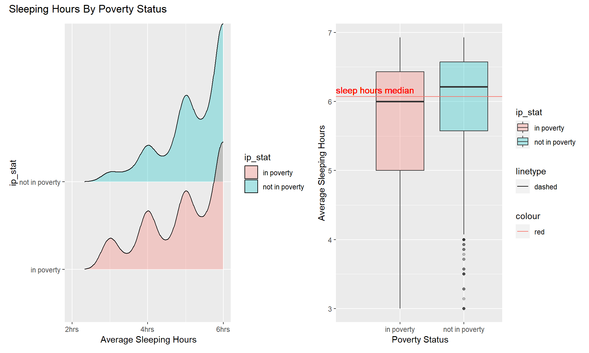
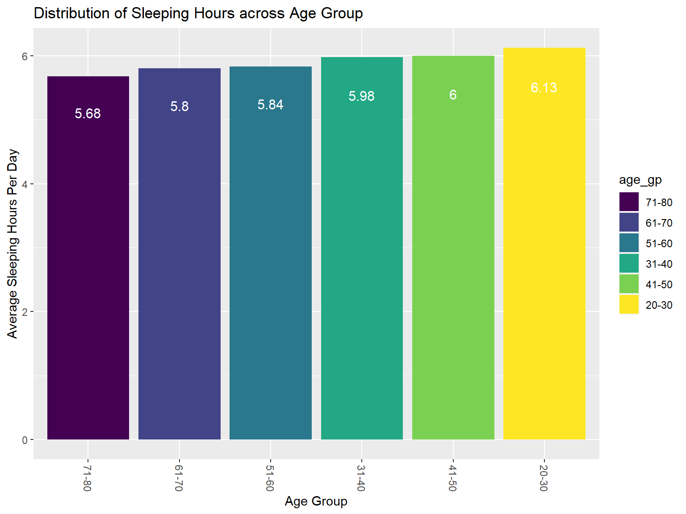

Sleep and Social Factors
Data Sources
The first data set that was used to explore the association between sleeping and social factors was downloaded from the NHANES database.
The second data set was from CDC.
Data Processing and Cleaning
- For data from the NHANES database: The predictors and the response
variable were from different data base in NHANES. First, the the column
name for these response variables was changed to appropriate names. The
original data included numbers to represent difference levels for each
predictor, specific names was also replaced for each number. Then, the
response variable related to sleeping was from another data base. For
this data set, similar steps was used with dealing with the predictors
data set. All column names was converted to appropriate names, and
character names also replaced the numbers as well. An extra column was
added to the data set:
ave_slp_hr, which is the average sleeping hours per day, by calculating the mean of the weekday and weekend sleeping hours. For the third step, all empty cells was removed. Finally, the two cleaned data sets was joined through the patients’ unique sequence number.
demo=foreign::read.xport("nhanes/P_DEMO.XPT") %>%
janitor::clean_names() %>%
select(seqn,riagendr,ridageyr,ridreth3,dmdeduc2,indfmpir) %>%
drop_na() %>%
rename(gender=riagendr,
age=ridageyr,
race=ridreth3,
education_level=dmdeduc2,
income_poverty_ratio=indfmpir) %>%
mutate(gender=case_when(gender==1 ~ "male",
gender==2 ~ "female")) %>%
mutate(race=case_when(race==1 ~ "Mexican American",
race==2 ~ "Other Hispanic",
race==3 ~ "Non-Hispanic White",
race==4 ~ "Non-Hispanic Black",
race==6 ~ "Non-Hispanic Asian",
race==7 ~ "Other Race")) %>%
mutate(education_level=case_when(education_level==1 ~ "less than 9th grade",
education_level==2 ~ "9-11th grade",
education_level==3 ~ "high school graduate",
education_level==4 ~ "college or AA degree",
education_level==5 ~ "college graduate or above",
education_level==7 ~ "refused",
education_level==9 ~ "don't know"))
sleep_df=foreign::read.xport("nhanes/P_SLQ.XPT") %>%
janitor::clean_names() %>%
select(seqn,slq300,slq310,sld012,slq320,slq330,sld013,slq050,slq120) %>%
rename(weekday_slp_time=slq300,
weekday_wake_time=slq310,
weekday_slp_hr=sld012,
weekend_slp_time=slq320,
weekend_wake_time=slq330,
weekend_slp_hr=sld013,
trouble_slp=slq050,
sleepy_freq=slq120
) %>%
filter(weekday_slp_time!=77777 & weekday_slp_time!= 99999) %>%
filter(weekday_wake_time!=77777 & weekday_wake_time!= 99999) %>%
filter(weekend_slp_time!=77777 & weekend_slp_time != 99999) %>%
filter(weekend_wake_time!= 77777 & weekend_wake_time != 99999) %>%
filter(trouble_slp!=7 & trouble_slp!= 9) %>%
filter(sleepy_freq!= 7 & sleepy_freq!=9) %>%
drop_na() %>%
mutate(trouble_slp=case_when(trouble_slp==1 ~ "yes",
trouble_slp==2 ~ "no")) %>%
mutate(sleepy_freq=case_when(sleepy_freq==0 ~ "never",
sleepy_freq==1 ~ "once a month",
sleepy_freq==2 ~ "2-4 per month",
sleepy_freq==3 ~ "5-15 per month",
sleepy_freq==4 ~ "16-30 per month",
))%>%
mutate(ave_slp_hr = (5*weekday_slp_hr + 2*weekend_slp_hr)/7)slp_df=inner_join(demo,sleep_df,by="seqn") %>%
na_if("") %>%
na.omit()
write_csv(slp_df, "data/slp_df.csv")Data Description
Exploratory Analysis
On this page, we’ll explore the association between our key outcome - average sleeping hours less than 7 hours (insufficient sleep) and predictors, including major demographic variables like age, race, and sex, poverty status, and education level.
National trends in short sleep duration
Short sleep duration is based on age group recommended hours of sleep per day and defined as less than 7 hours for adults. This plot shows age-adjusted prevalence of adults who reported short sleep duration from 2013 to 2020. Overall, short sleep duration prevalence was higher among males than females across years.
year_df=read_csv("data/AdultTrends.csv") %>%
janitor::clean_names() %>%
pivot_longer(cols=c("female", "male"),
names_to = "sex",
values_to = "age_adjust_prev") %>%
ggplot(aes(x=year,y=age_adjust_prev,col=sex))+geom_line()+geom_point()+labs(
title = "National trends in short sleep duration",
x = "Year",
y = "Age Adjusted Prevalence %"
)
year_df+transition_reveal(year)
Education level
We first want to get the distribution of sleeping hours less than 7 hours across the five different education levels. We will construct a bar chart tabulating the average sleeping hours per week in each of the five education levels. Gender consideration was also added into to the bar chart in order to see a difference between female and male in each category.
edu_plot=slp_df %>%
filter(ave_slp_hr<7)%>%
group_by(education_level,gender) %>%
summarize(ave_sleep=mean((weekday_slp_hr*5+weekend_slp_hr*2)/7)) %>%
ungroup() %>%
ggplot(aes(x=education_level,y=ave_sleep,fill=gender))+ geom_bar(width=0.5,stat="identity")+
viridis::scale_fill_viridis(
name = "gender",
discrete = TRUE
) + geom_text(aes(label = round(ave_sleep, 2)),position = position_stack(vjust=0.9), color = "white", size = 4)+
theme(axis.text.x = element_text(angle = -90, vjust = 0.5, hjust=1))+labs(
title = "Distribution of sleeping hours across education level",
x = "Education Level",
y = "Average Sleeping hours per day"
)
edu_plot
From the above plot, high school graduates has the least sleeping hours, while college graduates or above has the highest. Female and male does not have a significant difference in both groups.
Race
A heat map was made to visualize sleeping hours less than 7 hours among different races. The below plot indicates that there is a large number of people who has a sleeping hour of 6 hours per day among the Non-Hispanic black group. There are also many Non-Hispanic Whites who has an average of 6 hours per day.
race_plot=slp_df %>%
filter(ave_slp_hr<7) %>%
mutate(sleep_ave=(weekday_slp_hr*5+weekend_slp_hr*2)/7) %>%
group_by(race,sleep_ave) %>%
summarise(obs=n()) %>%
plot_ly(
x = ~sleep_ave, y = ~race, z = ~obs, type = "heatmap", colors = "BuPu"
) %>%
colorbar(title = "Number of People", x = 1, y = 0.5)
layout(race_plot, xaxis = list(title = "Average Sleeping Hours Per Day"), yaxis = list(title = "Race"))Race Gender Gap by Education Level
The below plot demonstrates the gender gap in the patients for different races. Male outnumber female for sleeping less than 7 hours per day for all race, except Non-Hispanic Black and Non-Hispanic Asian. The bubble represents the degree of the gap, along inlcuding their education level.
gender_plot=slp_df %>%
filter(ave_slp_hr<7) %>%
group_by(race,education_level) %>%
summarize(total_f=sum(gender=="female"),
total_m=sum(gender=="male"),
gap=total_m-total_f) %>%
mutate(text_lable=str_c("Race=",race,"\nEducation level: ", education_level)) %>%
plot_ly(x=~total_m,y=~total_f,text=~text_lable,color=~race,size=~gap,type="scatter",mode="markers",
colors="viridis",sizes = c(50, 700), marker = list(opacity = 0.7))
layout(gender_plot, title = "Race Gender Gap by Education Level", xaxis = list(title = "Number of Male Sleeping less than 7 hrs"), yaxis = list(title = "Number of Female Sleeping less than 7 hrs"))Poverty Status
We can observe that people who are in poverty tend to have less sleeping hours than those who are not in poverty.
income_df=slp_df %>%
filter(ave_slp_hr<7) %>%
mutate(ip_stat=case_when(income_poverty_ratio > 1 ~ "not in poverty",
income_poverty_ratio < 1~ "in poverty",
income_poverty_ratio == 1~ "in poverty")) %>%
ggplot(aes(x=weekday_slp_hr,y=ip_stat,fill=ip_stat))+
geom_density_ridges(
aes(point_color = ip_stat, point_shape = ip_stat,point_fill=ip_stat),
alpha = .3, point_alpha = 0.7)+
scale_x_continuous(
breaks = c(2, 4, 6),
labels = c("2hrs", "4hrs", "6hrs"),
limits = c(2, 6)
)+labs(
x = " Average Sleeping Hours"
)
box_plot=
slp_df %>%
filter(ave_slp_hr<7) %>%
mutate(ip_stat=case_when(income_poverty_ratio > 1 ~ "not in poverty",
income_poverty_ratio < 1~ "in poverty",
income_poverty_ratio == 1~ "in poverty")) %>%
mutate(sleep_ave=(weekday_slp_hr*5+weekend_slp_hr*2)/7) %>%
ggplot(aes(x=ip_stat,y=sleep_ave))+geom_boxplot(aes(fill = ip_stat), alpha = 0.3)+
geom_hline(aes(yintercept=median(sleep_ave),
color="red", linetype="dashed"))+
geom_text(aes(0, median(ave_slp_hr), label = "sleep hours median"), vjust = -0.5, hjust = 0, color = "red")+labs(
x = " Poverty Status",
y = "Average Sleeping Hours"
)
comb=income_df+box_plot
comb+plot_annotation(
title = "Sleeping Hours By Poverty Status"
) 
Age
A bar plot was made to see the distribution of average sleeping hours less than 7 hours in different age groups. People age between 71 and 80 has the least sleeping hours with about 5.68 hours per day.
age_group= slp_df%>%
filter(ave_slp_hr<7) %>%
mutate(age_gp=case_when(age>=20 & age<=30 ~ "20-30",
age>=31 &age <=40 ~ "31-40",
age>=41 &age<=50 ~ "41-50",
age>=51 &age<=60 ~ "51-60",
age>=61 &age<=70 ~ "61-70",
age>=71 & age <=80 ~ "71-80")) %>%
group_by(age_gp) %>%
summarise(ave_slp=mean((weekday_slp_hr*5+weekend_slp_hr*2)/7))%>%
ungroup() %>%
mutate(age_gp=fct_reorder(age_gp,ave_slp)) %>%
ggplot(aes(x=age_gp,y=ave_slp,fill=age_gp))+ geom_bar(stat="identity")+ scale_fill_viridis_d()+
theme(axis.text.x = element_text(angle = -90, vjust = 0.5, hjust=1))+
geom_text(aes(label = round(ave_slp, 2)),position = position_stack(vjust=0.9), color = "white", size = 4)+labs(x="Age Group",y="Average Sleeping Hours Per Day",title="Distribution of Sleeping Hours across Age Group")
age_group
Statistical Analysis
Multiple Linear Regression (MLR)
Data
df_mod = slp_df %>%
select(gender, age, race, education_level, income_poverty_ratio, trouble_slp, sleepy_freq, ave_slp_hr)
set.seed(1)
rt = 0.8
sub = sample(1:nrow(df_mod), round(nrow(df_mod)*rt))
data_train = df_mod[sub,]
data_test = df_mod[-sub,]Modeling
lmraw = lm(ave_slp_hr ~ ., data = data_train)The model driven by multiple linear regression is: \[\scriptsize sleep\_hour=8.09-0.31*I(gender = male)-0.28*I(race = Non-Hispanic\ Black)-0.22*I(education\_level = college\ graduate\ or\ above)\\\scriptsize-0.28*I(education\_level = college\ or\ AA\ degree)-0.14*I(education\_level = high\ school\ graduate)-0.05*income\_poverty\_ratio-0.10*trouble\_slpyes\\\scriptsize +0.32*I(sleepy\_freq = 2-4 per\ month)+0.37*I(sleepy\_freq = freqnever)+0.33*I(sleepy\_freq = freqonce\ month).\] We find it strongly relating to gender, trouble_types, income_poverty_ratio, and some levels in race, education_level and sleep frequency.
Diagnostic plots
par(mfrow = c(2,2))
plot(lmraw, cex.lab = 1)Overall, the diagnostic plots indicates that all of the assumptions
of MLR below are met.
1.Residuals are normally distributed
2.Variance of residuals is constant across the range of variables
3.Residuals are independent of one another
MLR under stepwise
step1 = step(lmraw, direction = 'both', trace=0)The model after stepwise method is: \[\scriptsize sleep\_hour=8.10-0.31*I(gender = male)-0.28*I(race = Non-Hispanic\ Black)-0.22*I(education\_level = college\ graduate\ or\ above)\\\scriptsize-0.28*I(education\_level = college\ or\ AA\ degree)-0.14*I(education\_level = high\ school\ graduate)-0.05*income\_poverty\_ratio-0.10*trouble\_slpyes\\\scriptsize +0.32*I(sleepy\_freq = 2-4 per\ month)+0.37*I(sleepy\_freq = freqnever)+0.33*I(sleepy\_freq = freqonce\ month).\] We find it is nearly the same as previous multiple linear regression model.
Testing
raw_pred = predict(lmraw, newdata = data_test)
dlm = data.frame(
Error = c("MSE", "MAE", "RMSE"),
Value = c(mean((data_test$ave_slp_hr - raw_pred)^2),
caret::MAE(data_test$ave_slp_hr, raw_pred),
caret::RMSE(data_test$ave_slp_hr, raw_pred)))
knitr::kable(dlm)| Error | Value |
|---|---|
| MSE | 2.111956 |
| MAE | 1.089663 |
| RMSE | 1.453257 |
The table above shows the statistical measurement factors about the linear model.
Logistic
data_logtrain = data_train %>%
mutate(sufficient_slp = ifelse((ave_slp_hr >= 7), 1, 0)) %>%
select(-ave_slp_hr)
glmraw = glm(sufficient_slp ~ ., data = data_logtrain, family = binomial)We use logistic regression model for predicting whether the person has sufficient sleep. Following the definition of sufficient sleep in Sleep & Diseases section, we label the ave_slp_hr greater or equal to 7 hours as ‘sufficient’. The first logistic model shows the significant predictors are gender, race, education_level, trouble_types, and sleep_freq.
step2 = step(glmraw, direction = 'both', trace=0)
summary(step2)##
## Call:
## glm(formula = sufficient_slp ~ gender + race + trouble_slp +
## sleepy_freq, family = binomial, data = data_logtrain)
##
## Deviance Residuals:
## Min 1Q Median 3Q Max
## -2.0226 0.5288 0.6476 0.7722 1.2735
##
## Coefficients:
## Estimate Std. Error z value Pr(>|z|)
## (Intercept) 1.02780 0.14214 7.231 4.80e-13 ***
## gendermale -0.38836 0.06156 -6.308 2.82e-10 ***
## raceNon-Hispanic Asian -0.09637 0.13922 -0.692 0.48881
## raceNon-Hispanic Black -0.71862 0.11440 -6.281 3.35e-10 ***
## raceNon-Hispanic White -0.01019 0.11377 -0.090 0.92865
## raceOther Hispanic -0.20316 0.14107 -1.440 0.14984
## raceOther Race -0.45807 0.16313 -2.808 0.00499 **
## trouble_slpyes -0.14384 0.06851 -2.100 0.03576 *
## sleepy_freq2-4 per month 0.73843 0.11044 6.686 2.29e-11 ***
## sleepy_freq5-15 per month 0.32642 0.11713 2.787 0.00532 **
## sleepy_freqnever 0.87908 0.12666 6.941 3.90e-12 ***
## sleepy_freqonce a month 0.82618 0.11788 7.009 2.41e-12 ***
## ---
## Signif. codes: 0 '***' 0.001 '**' 0.01 '*' 0.05 '.' 0.1 ' ' 1
##
## (Dispersion parameter for binomial family taken to be 1)
##
## Null deviance: 6738.4 on 6131 degrees of freedom
## Residual deviance: 6522.3 on 6120 degrees of freedom
## AIC: 6546.3
##
## Number of Fisher Scoring iterations: 4The model after stepwise method shows the significant predictors are still gender, race, education_level, trouble_types, and sleep_freq, but the estimated coefficients change.
anova(object = glmraw,test = "Chisq")## Analysis of Deviance Table
##
## Model: binomial, link: logit
##
## Response: sufficient_slp
##
## Terms added sequentially (first to last)
##
##
## Df Deviance Resid. Df Resid. Dev Pr(>Chi)
## NULL 6131 6738.4
## gender 1 28.957 6130 6709.4 7.402e-08 ***
## age 1 0.106 6129 6709.3 0.74514
## race 5 92.495 6124 6616.8 < 2.2e-16 ***
## education_level 6 15.238 6118 6601.6 0.01848 *
## income_poverty_ratio 1 0.367 6117 6601.2 0.54443
## trouble_slp 1 15.230 6116 6586.0 9.517e-05 ***
## sleepy_freq 4 76.823 6112 6509.2 8.199e-16 ***
## ---
## Signif. codes: 0 '***' 0.001 '**' 0.01 '*' 0.05 '.' 0.1 ' ' 1We test model significance using ANOVA, and claim the significant predictors for logistic regression model are the same as stepwise method.
Testing
data_logtest = data_test %>%
mutate(sufficient_slp = ifelse((ave_slp_hr >= 7), 'sufficient', 'insufficient')) %>%
select(-ave_slp_hr)
prob2 = round(predict(object = glmraw, newdata = data_logtest,type = "response"))
pred2 = ifelse(prob2 == 1, 'sufficient', 'insufficient')
pred2 = factor(pred2, levels = c('insufficient', 'sufficient'), order=TRUE)
tablog = table(data_logtest$sufficient_slp, pred2, dnn=c("true","pre"))
tablog## pre
## true insufficient sufficient
## insufficient 6 356
## sufficient 5 1166From the table, we find:
1. the logistic model works well on sufficient sleep, \(\frac{1166}{1166+5} = 99.57\%\)
2. the logistic model works not well on sufficient sleep, \(\frac{6}{6+356} = 0.02\%\)
3. the total accuracy of the model prediction is \(\frac{1166+6}{1166+5+6+356} = 76.45\%\)
We find the model does not have the ability to predict insufficient sleep cases, and the extreme gap extreme gap of the prediction ability between sufficient sleep and insufficient sleep inspires us to optimize the logistic regression model.
XGBoost
Boosting is a well-known machine learning method, and we decide to use XGBoost algorithm to optimize the prediction ability based on the logistic objective.
Data
clafeats = c('gender', 'race', 'education_level', 'trouble_slp', 'sleepy_freq')
dums = dummyVars(~ gender + race + education_level + trouble_slp + sleepy_freq, data = df_mod)
slp_oh = as.data.frame(predict(dums, newdata = df_mod))
slp_df_new =cbind(df_mod[,-c(which(colnames(df_mod) %in% clafeats))],slp_oh) %>%
mutate(sufficient_slp = ifelse((ave_slp_hr >= 7), 1, 0)) %>%
select(-ave_slp_hr)
set.seed(123)
rtxg = 0.8
subxg = sample(1:nrow(slp_df_new), round(nrow(slp_df_new)*rt))
data_trainxg = slp_df_new[sub,]
data_testxg = slp_df_new[-sub,]
data_trainx = data_trainxg[,-25]
data_trainy = data.frame(data_trainxg[,25])
names(data_trainy) = c('label')
data_testx = data_testxg[,-25]
data_testy = data.frame(data_testxg[,25])
names(data_testy) = c('label')
dtrain = xgb.DMatrix(data = as.matrix(data_trainx), label = data_trainy$label)
dtest = xgb.DMatrix(data = as.matrix(data_testx), label = data_testy$label)Training
xgb2 = xgboost(data = dtrain, booster = "gbtree", max_depth = 10, nround = 2000, objective = "binary:logistic", verbose = 0)We choose the gbtree booster and binary:logistic objective for training xgboost model and comparing with logistic regression model later.
Testing
xgbpred2 = round(predict(xgb2, dtest))
tablog = table(data_testy$label, xgbpred2, dnn=c("true","pre"))
tablog## pre
## true 0 1
## 0 75 287
## 1 201 970From the table, we find:
1. the logistic model works well on sufficient sleep, \(\frac{970}{970+201} = 82.84\%\)
2. the logistic model works not well on sufficient sleep, \(\frac{75}{75+287} = 20.72\%\)
3. the total accuracy of the model prediction is \(\frac{75+970}{75+287+970+201} =
68.17\%\)
Comparing xgboost with logistic regression, we find although the prediction abilities of xgboost under gbtree booster and binary:logistic objective for sufficient sleep and the total are lower, the model actually is much reasonable as it could better predict insufficient sleep cases without extreme gap of the prediction ability between two groups.
xgb_imp2 = xgb.importance(feature_names = xgb2$feature_names, model = xgb2)
xgb.ggplot.importance(xgb_imp2, top_n =10, n_clusters = 2)The feature importance plot of XGBoost model indicates two extremely important factors, income_poverty_ratio and age. Which differs from linear models so that we want to explore the decision tree structure.
Tree plot
xgb.plot.tree(model = xgb2, trees=1999, plot_width = 800)According to the XGBoost tree plot above, we can clearly discover how the final tree model decides the values on each leaf, which are probability estimators based on the logistic function.
Social factors related to Sleeping Status Data
The resulting data file of
slp_dfcontains a single dataframe with 7665 rows of data on 15 variables, the list below is our variables of interest:seqn. The sequence number of the candidate.gender. Gender of the candidate.age. Age of the candidate.race. Race of the candidate.hour. Time(hour) violation occurred.education_level. The education level of the candidate.income_poverty_ratio. A ratio to classify poverty and not poverty. Ratio greater than 1 will be considered as not poverty, ratio less than 1 will considered as poverty.weekday_slp_time. Sleep time on weekdays or workdays.weekday_wake_time. Wake time on weekdays and workdays.weekday_slp_hr. Average sleeping hours on weekdays or workdays.weekend_slp_time. Sleep time on weekends.weekday_wake_time.Wake time on weekends.weekend_slp_hr. Average sleeping hours on weekends.trouble_slp. A response on whether telling the doctor having trouble sleeping.sleepy_freq. Average sleeply times during daytime per month.ave_slp_hr. Average sleeping hours per day.